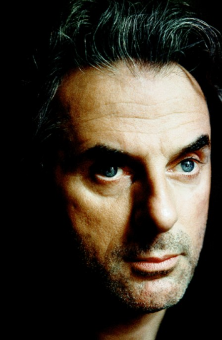

Серия убийств заставляет содрогнуться от ужаса даже видавших виды парижских полицейских. В городе орудует маньяк-каннибал, пожирающий плоть своих жертв. Кто он — психопат-аутист, садист-извращенец, поклонник первобытных культов? Множатся версии, но ни одна не ведет к разгадке зловещей тайны. У Жанны Крулевска — опытного следственного судьи и красивой женщины — есть личные причины принять брошенный убийцей вызов. Поиски исти ны перенесут ее через океан, вынудят пересечь Никарагуа и Гватемалу, заведут вглубь аргентинских болот. Здесь, в самом сердце Леса мертвецов, ей откроется подлинный источник Зла…
Еще о книге
««Гранже держит читателей в напряжении на всем протяжении дистанции, которую его невероятно привлекательные герои преодолевают наперегонки со смертью», — L’Express
«Гранже превзошел самого себя: читаешь — и мороз по коже...», — Le Monde des Livres
Цитаты из книги
- "Объективности не существует. Правосудие — дело рук человеческих. Несовершенное, зыбкое, субъективное."
- "..«Для женщины первый поцелуй — начало любви. Для мужчины — начало расставания»."
- "— Грязь — это время, уничтожающее красоту женщины. Монотонная повседневность, которая ее подтачивает. Банальность, которая затягивает ее день за днем."
Об авторе
Жан-Кристоф Гранже — журналист, международный репортер, писатель и сценарист родился 15 июля 1961 года. Один из немногих французских авторов детективов, чьи книги пользуются большой популярностью в США.После окончания магистратуры в Сорбонне, Жан-Кристоф работал младшим редактором в новостном агентстве. В 1989 году, в возрасте 28 лет, работал международным репортером на издания Paris Match, Sunday Times, National Geographic и др. В 1994 году стал независимым журналистом, открыл компанию L&G, самостоятельно оплачивал командировки и ездил в самые удаленные уголки планеты. Сделанные им репортажи стали источником вдохновения для будущих книг. В это же время получил две почетные награды в области журналистики: премию Reuter (1991) и премию World Press (1992).
В 1994 году вышел его первый роман «Полет аистов», оставшийся почти незамеченным у широкой публики, но отмеченный критиками. Второй роман «Багровые реки» принес Жан-Кристофу известность, особенно после получения гран-при RTL-Livres , премии Choix des libraires и последовавшей экранизации с Жаном Рено в главной роли.
В 2000 был написан роман «Братство камня» (экранизирован в 2006 с Моникой Беллуччи в главной роли), а в 2003 опубликована «Империя волков» (роман экранизирован в 2005). В 2004 году Гранже начал писать трилогию об исследовании метафизики зла, в нее вошли романы «Черная линия», «Присягнувшие тьме» и «Лес мертвецов». В то же время он работал над киносценариями — адаптацией «Багровых рек» и фильмом «Видок». В последующие годы создал еще несколько триллеров: «Пассажир», позже адаптированный в мини-сериал, «Кайкен», «Лонтано» и «Конго Реквием».
Новый роман Гранже «Земля мертвых» погружает читателей в темный мир запретных желаний и опасных наслаждений. «Чувствительным душам просьба воздержаться!», — предостерегает газета Le Figaro.
Входит в подборку 10 лучших триллеров и книг ужасов